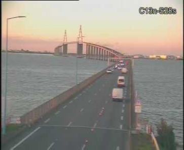

{% include breadcrumb/breadcrumb.html %}
Info trafic sur le Pont de Saint-Nazaire
Pour vous permettre de connaître en temps réel l’état de la circulation sur le pont de Saint-Nazaire et de préparer au mieux vos déplacements, consultez cette page ou téléchargez l’application mobile Pont de Saint-Nazaire.
Trafic
Saint-Nazaire > Saint-Brevin
{% include card/card--inforoutes--horizontale.html context="--inforoutes" title="Fluide" nameImg="car" arialevel='"aria-level="2"' text="5 min" %}Saint-Brevin > Saint-Nazaire
{% include card/card--inforoutes--horizontale.html context="--inforoutes" title="Dense" nameImg="cars" arialevel='"aria-level="2"' text="+ de 20 min" %}Sens de la circulation
En cours
{% include card/card--inforoutes--horizontale.html context="--inforoutes" title="" nameImg="m122" arialevel='"aria-level="2"' text="2 voies" text2="St Brevin / St Nazaire" %}À venir
{% include card/card--inforoutes--horizontale.html context="--inforoutes" title="12h30" nameImg="m112" arialevel='"aria-level="2"' text="2 voies" text2="St Brevin / St Nazaire" %} {% include card/card--inforoutes--horizontale.html context="--inforoutes" title="6h30" nameImg="m012" arialevel='"aria-level="2"' text="Voie Mer fermée – accès nord par Gron dévié" %}Direct

Les événements en cours
| Type | Lieu | Dates(s) | Conditions de circulation | Publication / Mise à jour |
|---|---|---|---|---|
| Obstacle sur la chaussée |
D213 - Guérande La Baule-Escoublac vers Guérande |
Du 03/11/2020 au 05/11/2020 | Nettoyage de la chaussée | Le 04/11/20 à 14:28 |
 Obstacle sur la chaussée Obstacle sur la chaussée |
D213 - Guérande La Baule-Escoublac vers Guérande |
Du 03/11/2020 au 05/11/2020 | Nettoyage de la chaussée | Le 04/11/20 à 14:28 |
| Obstacle sur la chaussée |
D213 - Guérande La Baule-Escoublac vers Guérande |
Du 03/11/2020 au 05/11/2020 | Nettoyage de la chaussée | Le 04/11/20 à 14:28 |
| Obstacle sur la chaussée |
D213 - Guérande La Baule-Escoublac vers Guérande |
Du 03/11/2020 au 05/11/2020 | Nettoyage de la chaussée | Le 04/11/20 à 14:28 |
| Obstacle sur la chaussée |
D213 - Guérande La Baule-Escoublac vers Guérande |
Du 03/11/2020 au 05/11/2020 | Nettoyage de la chaussée | Le 04/11/20 à 14:28 |